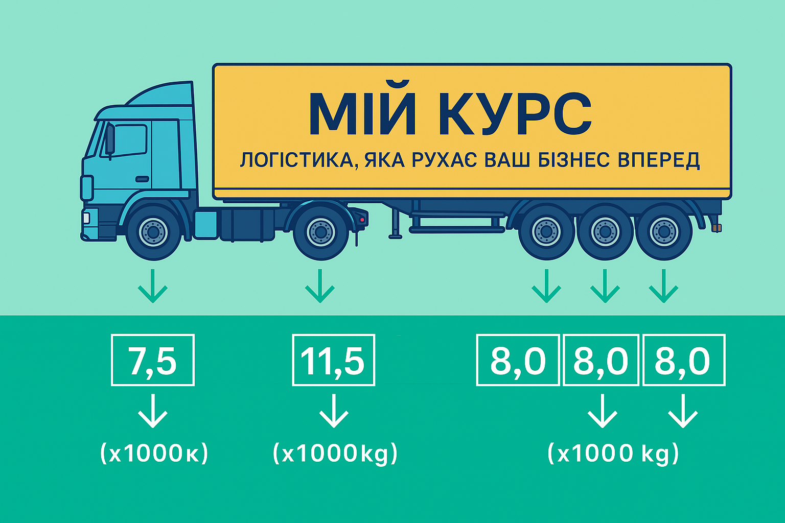

Обмеження ваги
Максимальна дозволена вага для автомобільного транспорту становить 40 тонн. При перевезенні вантажів 23–24т залишається мінімальний запас для ваги самого автомобіля та палива.
МІЙ КУРС
Перевезення негабариту та важких вантажів із контролем осьових навантажень.
Важкі вантажі
Перевезення важких вантажів вагою 23–24 тонни вимагає особливої уваги до деталей, професійного підходу та дотримання всіх норм безпеки. Це один з найскладніших видів транспортування, який потребує спеціальних знань та досвіду.
Складності
Максимальна дозволена вага для автомобільного транспорту становить 40 тонн. При перевезенні вантажів 23–24т залишається мінімальний запас для ваги самого автомобіля та палива.
Багато доріг мають обмеження по вазі та габаритах. Необхідно планувати маршрут з урахуванням мостів, естакад та інших споруд з обмеженнями по навантаженню.
Для перевезення важких вантажів потрібні спеціальні дозволи та ліцензії. Процедура отримання може займати від кількох днів до тижнів.
Автомобіль повинен мати відповідну технічну характеристику, включаючи потужність двигуна, гальмівну систему та підвіску, здатну витримати великі навантаження.
Перевезення важких вантажів зазвичай займає більше часу через обмеження швидкості, необхідність зупинок для перевірки та складність маршруту.
Перевезення важких вантажів коштує значно дорожче через спеціальні вимоги до техніки, додаткові дозволи та підвищені витрати на паливо.
Розрахунок ваги
Правильний розрахунок загальної ваги автомобіля є критично важливим для безпечного перевезення важких вантажів. Загальна вага не повинна перевищувати 40 тонн згідно з чинним законодавством.
Це вага порожнього автомобіля без вантажу, палива та водія. Вказана в технічному паспорті транспортного засобу. Зазвичай становить 6–8 тонн для вантажівки.
Це максимально дозволена вага автомобіля з вантажем, паливом, водієм та пасажирами. Також вказана в техпаспорті. Не повинна перевищувати 40 тонн.
Результат: Загальна вага не перевищує ліміт 40 тонн, перевезення можливе.
Перегрузи
Перегруз на осі є одним з найсерйозніших порушень при перевезенні важких вантажів. Кожна вісь має свої обмеження по навантаженню, які необхідно дотримуватися. Правильний розподіл ваги по осях критично важливий для безпеки та дотримання законодавства.

| Вісь | Максимум | Наслідки перегрузу |
|---|---|---|
| Передня вісь тягача | 7,5 тонн | Втрата керованості, підвищений знос шин |
| Задня вісь тягача | 11,5 тонн | Руйнування підвіски, зниження гальмівної ефективності |
| Вісі причіпу | 8,0 тонн на вісь | Поломка підвіски при перевантаженні однієї осі |
Орієнтовні суми штрафів, які можуть змінюватися залежно від конкретних обставин та законодавства країни.
Загальний перегруз
Загальний перегруз автомобіля виникає, коли повна вага транспортного засобу перевищує максимально дозволену вагу, вказану в технічному паспорті або законодавством (40 тонн).
Штраф за загальний перегруз становить від 1700 до 3400 гривень. При повторному порушенні сума штрафу збільшується. В інших країнах штрафи можуть бути значно вищими.
Автомобіль з перегрузом може бути затриманий до усунення порушення. Рух заборонено до розвантаження до дозволеної ваги.
Контакти
Пн–Пт: 9:00–18:00
Сб: 9:00–15:00
Україна, м. Київ
Підберемо маршрут і розрахуємо оптимальне завантаження для вашого важкого вантажу.